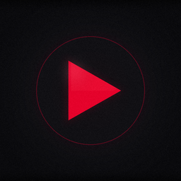

Your Personal Video Library, Beautifully.
Your NAS, Beautifully.
DSM Video is a polished native replacement for Synology Video Station — built for iPhone, iPad, and Apple TV. Install DSVideoServer on your NAS, point the app at it, and enjoy your personal movie and TV collection the way it was meant to be watched. No subscriptions, no third-party cloud, no compromise.
You Already Have a Home Media Server. You Deserve an App That Does It Justice.
Synology's Video Station is dated, clunky on Apple TV, and ignores years of iOS improvements. DSM Video is the full replacement — a fast, native app powered by DSVideoServer, a lightweight package that runs on your NAS and manages your library directly.
Your library is on your hardware, in your home, under your control. DSM Video keeps it that way.
Built for Every Screen
One app, every Apple device you own
Native Streaming
Full HLS and direct-play streaming from your NAS via DSVideoServer. Smooth 4K playback on Apple TV with hardware-accelerated decoding.
Apple TV App
A full tvOS app built for the 10-foot experience. Focus-engine navigation, cinematic poster art, and a parallax icon that looks great on your home screen.
Movies & TV Shows
Browse your entire library organized by Movies and TV Shows. Poster art, episode lists, season breakdowns — everything you'd expect from a premium streaming app.
Search Your Library
Full-text search across your entire video collection. Find any movie or episode in seconds, no matter how large your library.
Offline Downloads
Download videos to your iPhone or iPad for offline viewing. Perfect for flights, road trips, or anywhere you're away from your network.
Fully Private
No accounts, no analytics, no third-party cloud. Everything stays between your device and your NAS. Your media stays yours.
Resume Anywhere
Watch progress syncs across your devices. Stop on your iPhone, pick up exactly where you left off on Apple TV.
QuickConnect Support
Access your NAS from anywhere. Enter your Synology QuickConnect ID and DSM Video finds your server — no static IP, no port forwarding required.
A Player Built for Power Users
Gesture-driven controls designed for how you actually watch video. Swipe anywhere on screen to scrub through video — a full swipe covers 30 minutes. Swipe up or down to control volume. Pinch or tap to toggle between fill and fit. AirPlay to any device. Playback speed control. Skip forward and back with a tap.
On iPad, a sidebar gives you instant access to your entire library. On Apple TV, a cinematic interface built for the living room.
It feels like it was made by someone who watches a lot of movies. Because it was.
Install DSVideoServer on Your NAS
DSM Video connects to DSVideoServer — a lightweight package that runs on your Synology NAS. It manages your video library, handles authentication, and takes care of HLS transcoding for smooth streaming on any network.
Download the Package
Download the latest DSVideoServer .spk package from GitHub Releases.
Open Package Center
In DSM, open Package Center → Manual Install and upload the .spk file.
Point to Your Videos
In DSVideoServer's settings, set the paths to your video folders on the NAS.
Connect the App
Open DSM Video on iOS, enter your NAS address or QuickConnect ID, and log in.
Requires Synology DSM 7.0 or later · Intel or AMD NAS recommended for transcoding
Free Forever. No Strings.
DSM Video is completely free. No subscription, no in-app purchases, no ads. You already paid for your Synology — the app to use it should be free.
DSM Video is open-source. The server package and iOS app source are available on GitHub. Contribute, inspect, or fork it for your own needs.
Common Questions
What do I need to use DSM Video?
A Synology NAS running DSM 7.0 or later, and the DSVideoServer package installed from our GitHub releases page. Point DSVideoServer at your video folders and you're ready to go — no other packages required.
Does it work outside my home network?
Yes. Use your Synology QuickConnect ID or your NAS's external IP/domain. DSM Video will handle authentication and stream over the internet — just like being at home, only potentially slower depending on your upload speed.
Is it really free?
Yes. Completely free, no in-app purchases, no subscription. The app and server package are both open-source on GitHub.
Which Synology models are supported?
Any Synology NAS capable of running DSM 7.0. For HLS transcoding, an Intel or AMD processor is recommended — ARM-based models may have limited transcoding performance.
Do I need Synology Video Station?
No. DSM Video is a complete replacement for Video Station. DSVideoServer manages its own library index and handles everything independently — you don't need Video Station installed at all.
Can I download videos for offline viewing?
Yes. Tap the download button on any video in the app to save it to your iPhone or iPad for offline playback. Downloads are stored locally on your device.
Your NAS Deserves a Better App.
Download DSM Video free and start watching your personal library the way it was meant to be watched.
Get DSM Video — FreeAlso available on Apple TV via the App Store.